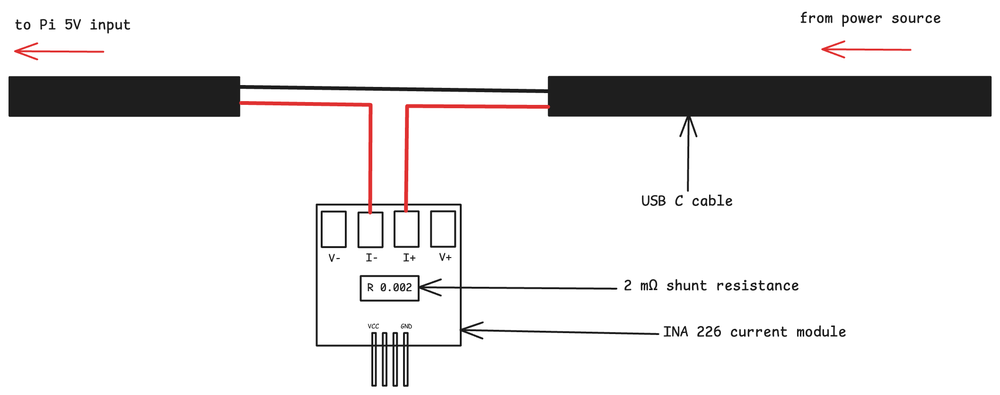
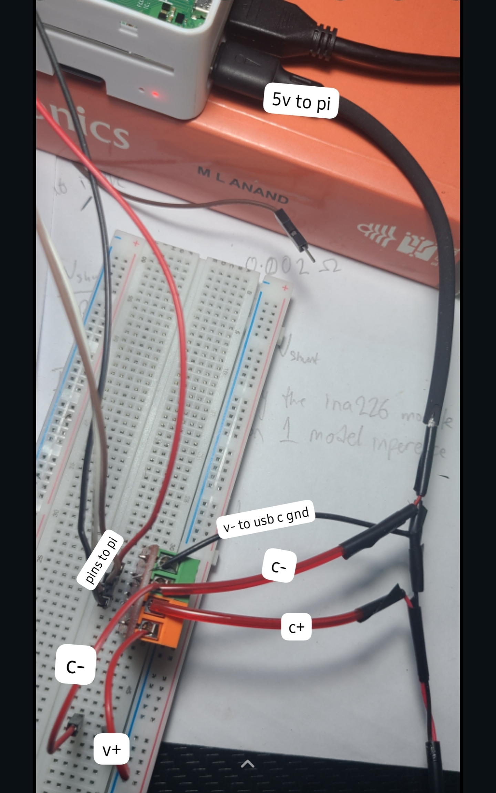
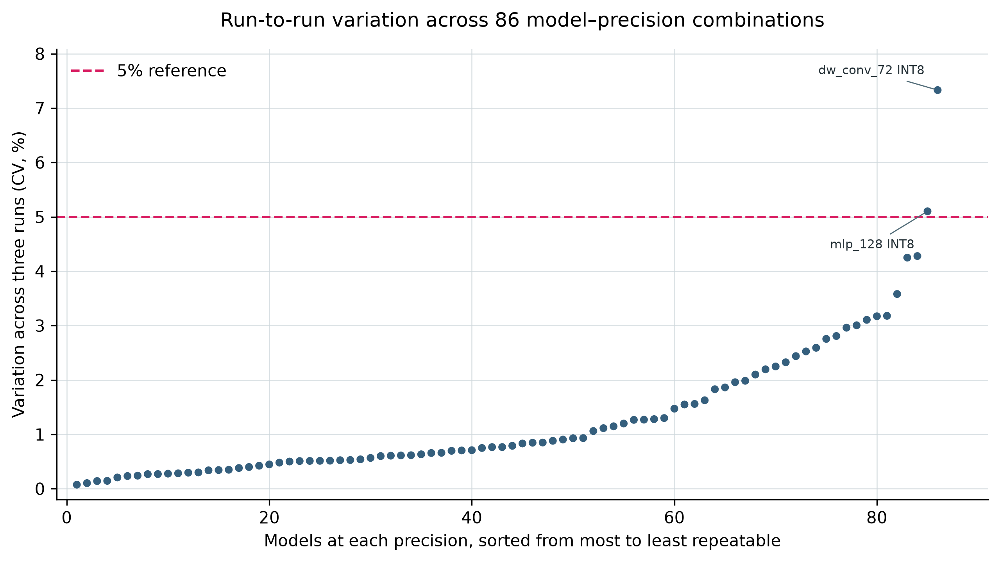
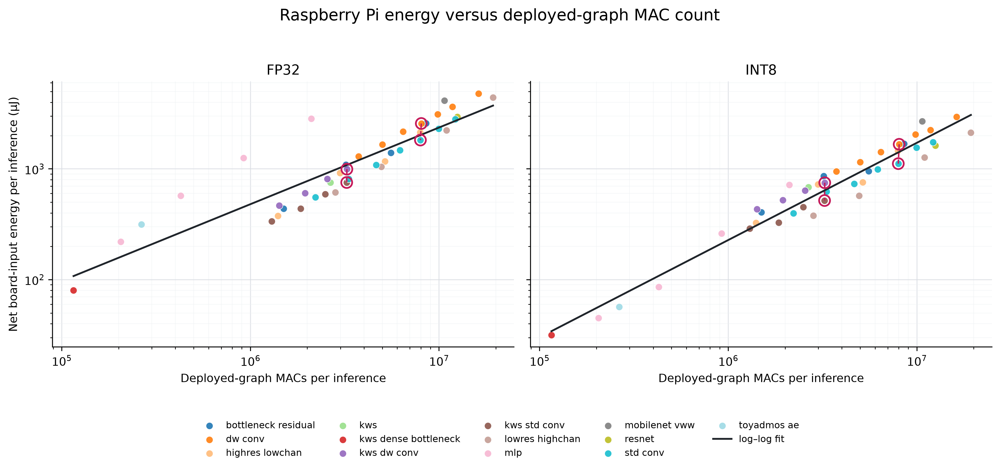
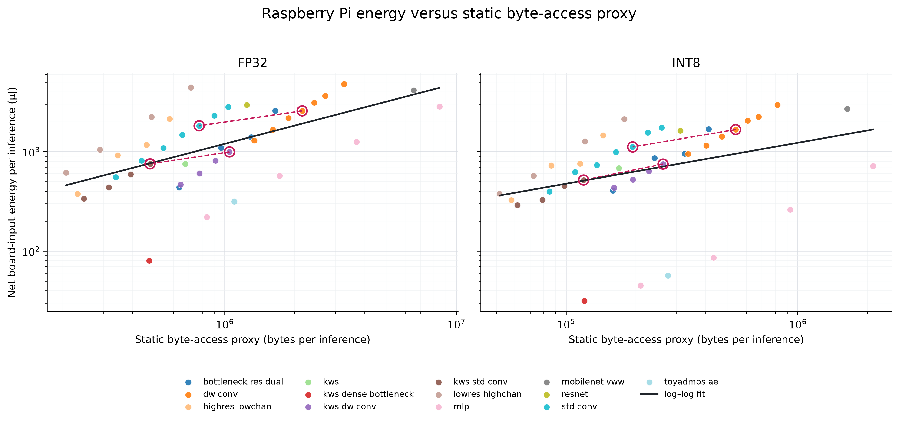
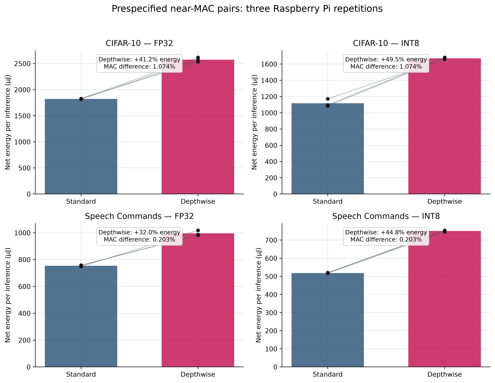
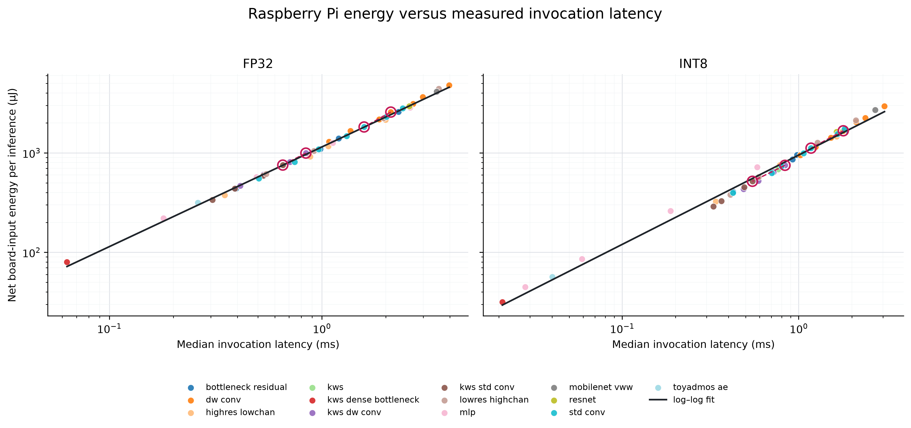
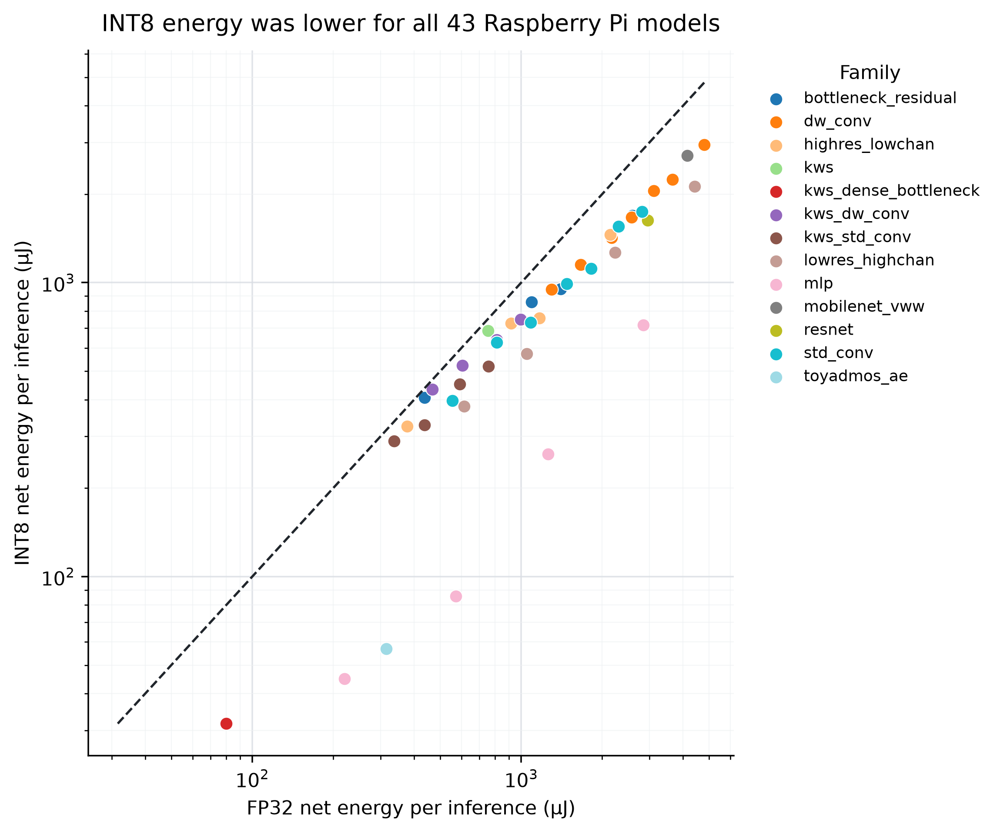

Benchmarking operation-count proxies for edge-inference energy
O.J. Akojede¹ and T.E. Hamzat²
¹ Independent Researcher, Lagos, Nigeria
² Energhx Research Group, Department of Mechanical Engineering,
University of Lagos, Nigeria
Project phase: Model-corpus preparation, static analysis and the formal Raspberry Pi experiment are complete. ESP32-S3 deployment and measurement remain in progress.
Abstract
Operation counts such as Floating Point Operations (FLOPs) and Multiply-Accumulate Operations (MACs) are widely used as proxies for computational efficiency in artificial intelligence. However, these metrics quantify arithmetic workload alone, whereas actual energy consumption depends on both computation and data movement. As AI inference is increasingly deployed on heterogeneous edge hardware, ranging from microcontrollers to cache-based and highly parallel processors, the extent to which operation counts remain reliable predictors of energy consumption is not fully understood.
This study systematically evaluates the relationship between operation-based complexity metrics and measured energy consumption across a diverse set of model architectures and edge computing platforms. For each model-platform pair, operation counts are compared against directly measured inference energy, execution latency, and memory cost.
The resulting benchmark characterizes how the relationship between operation counts and energy varies across several model architectures and two representative edge platforms: a Raspberry Pi single-board computer and an ESP32-S3 microcontroller, identifies conditions under which operation counts provide reliable estimates of energy cost, and highlights scenarios in which they systematically misrepresent deployment efficiency. These findings contribute to a more rigorous understanding of energy-aware AI evaluation.
Completed Raspberry Pi phase results with 258 valid trials show that MAC count was strongly associated with net board-input energy across the corpus (Pearson r = 0.912 for FP32 and 0.914 for INT8), but two pairs of standard-depthwise models with only 0.203%–1.074% in MAC count consumed 32.0%–49.5% more energy in the depthwise condition. Completion of the ESP32-S3 phase will determine whether the magnitude and mechanism of this divergence change between Linux-based and microcontroller-class edge systems.
Keywords: edge inference; energy measurement; operation counts; TinyML; TensorFlow Lite; embedded machine learning
1. Research problem
Artificial intelligence inference is increasingly deployed outside centralized cloud infrastructure and onto edge devices. This transition is driven by constraints that make local inference preferable to remote execution. The computational and energy requirements of a model influence whether it can run within available memory budgets and operate for extended periods on battery-powered hardware while satisfying latency needs.
Floating-point operations and multiply-accumulate operations are commonly used to compare model complexity because they can be computed without access to the final device. Parameter count and artifact size are used for the same reason. These quantities are useful descriptions of a model, but they do not directly measure energy.
The physical cost of inference is produced by the interaction between a deployed graph and its execution system. Arithmetic contributes to that cost, as do memory access, activation lifetime, operator implementation and runtime scheduling [1,2]. A depthwise-separable network may require fewer MACs than a standard-convolution network while creating a different sequence of intermediate tensors. The difference may be insignificant on one processor and consequential on another.
Prior studies reach different conclusions about the usefulness of operation count. FLOPs have shown weak correspondence with measured energy in some machine-learning settings, while tightly constrained microcontroller search spaces have shown stronger relationships between operation count, latency and energy [3,13]. Mobile system-on-chip measurements likewise indicate that hardware-aware predictors can outperform FLOPs alone [5]. These results suggest that the validity of an operation-count proxy depends on the models being compared and the platform executing them.
Related work has approached this problem through direct benchmarking on edge devices, phase-aware TinyML energy measurement, and predictive models based on layer or platform characteristics [15–20]. Architecture studies likewise show that FLOPs can conceal memory-access and operator-efficiency effects, particularly for depthwise and pointwise convolutions [21,22]. The present study complements that literature by combining a deliberately structured model corpus with prespecified near-MAC comparisons and external board-input measurement.
The study therefore asks:
- How strongly do FLOPs and MACs correspond with measured inference energy on representative edge platforms?
- Does that relationship change between a microcontroller and a Linux-based single-board computer?
- Do memory-facing metrics or measured latency explain energy more effectively than operation count alone?
- When MAC counts are closely matched, do differences in graph structure expose failures in arithmetic-only estimates?
2. Experimental design
The experiment is divided into a predictor phase and a measurement phase. The predictor phase fixes the data partitions, model corpus, task-quality criteria, deployment artifacts, static metrics and controlled comparisons before physical energy results are inspected. The measurement phase executes those frozen artifacts without retraining or graph modification.
The basic experimental unit is a model-platform pair: one fixed model artifact executed under one fixed hardware and runtime configuration. Raspberry Pi FP32 measurements form a within-platform precision analysis while the primary cross-platform condition uses full integer INT8 TensorFlow Lite artifacts on the ESP32-S3. Repeated measurement windows are used to quantify how much technical variation occurs for a model-platform condition.
Repeated measurement windows quantify technical variation within each condition and are not treated as additional independent models. In the Raspberry Pi experiment, every repetition contained all 86 model–precision conditions once in randomized order so that one architecture or precision was not consistently measured earlier or at a lower device temperature.
Corpus-level confidence intervals use 10,000 percentile bootstrap resamples of complete architecture families, preserving the dependence among widths from the same family [25]. The planned exact paired tests and multiplicity adjustments are retained in the supplementary result tables for auditability [14, 24].
3. Model corpus
The canonical corpus contains 43 trained neural networks. Four models act as application-oriented reference-style workloads: a ResNet-8-style image classifier, a DS-CNN keyword-spotting network, a width-reduced MobileNetV2 visual-wake-word model and a fully connected ToyADMOS autoencoder. These workloads correspond to task categories represented in MLPerf Tiny, although they are described as benchmark-aligned unless an official architecture and protocol are reproduced exactly [4].
The remaining 39 models were built as structural probes. Thirty-eight form eight replicated width families; one dense keyword-spotting bottleneck acts as a singleton control. The families vary convolution type, activation resolution, channel width, residual structure and parameter concentration while retaining a valid inference task.
| Model family | Task | Models | Experimental role |
|---|---|---|---|
| Standard-convolution CNN | CIFAR-10 | 7 | Arithmetic-dense width series |
| Depthwise-separable CNN | CIFAR-10 | 7 | Primary contrast with standard convolution |
| High-resolution/low-channel CNN | CIFAR-10 | 4 | Sustained spatial-activation probe |
| Early-downsampling CNN | CIFAR-10 | 4 | Activation-lifetime contrast |
| Multilayer perceptron | CIFAR-10 | 4 | Parameter-heavy, non-convolutional probe |
| Bottleneck-residual CNN | CIFAR-10 | 4 | Skip-connection and tensor-liveness probe |
| Standard-convolution KWS CNN | Speech Commands | 4 | Audio-domain standard-convolution series |
| Depthwise-separable KWS CNN | Speech Commands | 4 | Audio-domain depthwise comparison |
| Dense KWS bottleneck | Speech Commands | 1 | Parameter-concentration control |
| Reference-style workloads | Four tasks | 4 | Application-oriented anchors |

Figure 1. Composition of the 43-model INT8 corpus. CIFAR-10 and Speech Commands provide the replicated structural comparisons; the VWW-style and ToyADMOS models broaden the task and operator coverage.
The corpus was designed around experimental comparisons instead of equal representation of architectural families. Standard and depthwise-separable CNNs received the densest width sampling because their near-MAC comparisons form the study’s primary controlled test: they allow models with similar arithmetic workloads but different activation and operator structures to be compared. Seven widths were therefore used for each CIFAR-10 family to increase coverage around potential MAC-matched regions. Four widths were retained for the secondary structural-probe families, providing enough points to observe within-family scaling without allowing those exploratory contrasts to dominate the corpus. The architectural anchors provide reference points for comparing the intentionally constructed experimental models with architectures resembling real TinyML workloads.
4. Data preparation and model deployment
All stochastic split and selection procedures use recorded seeds, and the resulting indices are retained. Normalization statistics are estimated from model-fitting data only. Test data do not contribute to training, early stopping or post-training quantization calibration.
4.1 Inference tasks
CIFAR-10. The official training set was divided into 45,000 fitting and 5,000 validation images by seeded permutation. Images were scaled and standardized using fitting-partition statistics. The official 10,000-image test split was retained for final evaluation [6].
Speech Commands. Version 0.02 was partitioned with its published validation and test lists. One-second, 16 kHz recordings were represented as 49 × 10 mel-frequency cepstral coefficient matrices. The fitting, validation and test sets contain 36,923, 4,443 and 4,888 examples across 12 classes [7].
Visual Wake Words. A balanced person-detection subset was constructed from COCO 2014. Images were resized to 96 × 96 pixels. The 16,000-image fitting subset and disjoint 2,000-image validation and test subsets retain person-size and difficult-negative strata. Results are described as VWW-style rather than official benchmark scores [8,9].
ToyADMOS. ToyCar recordings were transformed into normalized 640-element spectral vectors. The autoencoder was trained on normal examples and evaluated by reconstruction error, AUC and partial AUC [10].
Task metrics establish that each network performs meaningful inference; they are not pooled into a single performance scale. Classification accuracy and anomaly-detection AUC answer different questions and are retained within their respective tasks.
4.2 Frozen deployment artifacts
Every selected checkpoint was converted into an FP32 TensorFlow Lite artifact and a full-integer INT8 artifact. INT8 conversion was restricted to integer TensorFlow Lite operators and required signed INT8 input and output tensors. This provides a common numerical representation for TensorFlow Lite Micro on the ESP32-S3 and LiteRT on the Raspberry Pi [11,12].
Quantization calibration used a deterministic, training-only representative set of no more than 300 examples per model. The FP32 and INT8 conditions use the same held-out examples in the same order. Input conversion is performed before a measurement window using the scale and zero point stored in each artifact.
The converted graph is treated as the deployment identity. Static metrics are calculated from the deployed operators and tensor shapes wherever possible rather than inferred only from the training framework.
5. Static predictors
Deployed-graph MAC count is the primary arithmetic predictor. One multiplication followed by one accumulation is counted as one MAC; the same work is represented as two operations when reported as FLOPs. The graph profiler also records the quantities below.
| Static quantity | Definition | Interpretation |
|---|---|---|
| Deployed-graph MAC count | MACs summed across supported operators | Arithmetic workload |
| Static byte-access proxy | Input + output + twice the intermediate activation bytes + unique parameter bytes | Idealized data-access demand |
| Activation-output bytes | Intermediate operator-output tensor sizes | Intermediate activation volume |
| Parameter footprint | Unique weight and bias tensors | Stored model data |
| Peak live tensor estimate | Maximum estimated simultaneously live tensor storage | Working-memory pressure |
| TensorFlow Lite artifact size | Size of the deployed FlatBuffer | Deployment storage |
| Static MAC-to-byte ratio | MAC count divided by the static byte-access proxy | Graph-derived work per estimated byte |
| Operator composition | Work distributed across operator types | Computational structure |
The memory-facing proxy is calculated as:
static byte-access proxy = input bytes + output bytes
+ (2 × intermediate activation-output bytes)
+ unique parameter bytesThe factor of two represents one write and one later read for each intermediate output. This is a graph-derived lower-bound proxy, not a measurement of physical memory traffic. Cache reuse, tensor allocation and runtime-specific fusion can make actual traffic differ substantially from this estimate.
The static MAC-to-byte ratio is a graph-derived analogue of Roofline operational intensity [23]. It is not a measurement of operations per byte transferred at a cache or DRAM boundary.
6. Controlled pre-measurement findings
Nine standard/depthwise pairs have MAC differences below 10%. These pairs provide a controlled test of whether similar arithmetic workload produces similar energy when estimated activation demand differs.

Figure 2. Relative MAC difference for the prespecified standard/depthwise comparisons. The minimum-difference pair in each task is highlighted.

Figure 3. MAC count, graph-shape proxies and deployed INT8 quality for the nine matched pairs.
On Speech Commands, kws_std_conv_32 and
kws_dw_conv_64 differed by only 0.203% in MAC count; the
corresponding difference between std_conv_32 and
dw_conv_64 on CIFAR-10 was 1.074%. The depthwise models had
activation-output totals 3.975× and 3.889× those of their
standard-convolution counterparts.
These pre-hardware results established controlled conditions in which an arithmetic-only metric ranked two models as nearly equal even though their deployed graphs had different estimated data-access demands. Section 8 reports what happened when those conditions were measured on the Raspberry Pi.
Across the full corpus, activation-output bytes and total static bytes have a moderate positive association: Pearson r = 0.504 and Spearman ρ = 0.546. This relationship is incomplete because parameter-heavy networks can have large static-byte estimates without large intermediate activations.

Figure 4. The 43 deployed INT8 graphs occupy different static runtime shapes. Colours distinguish architectural families while the dashed lines connect the closest prespecified standard/depthwise pair in each task.
A broader descriptive screen identified 35 standard/depthwise combinations with MAC differences below 50%. The depthwise model had the larger static byte-access proxy in every combination, with increases from 63.3% to 271.0%. Thirty-two of the 35 combinations had at least twice the estimated static-byte demand. Because models recur across combinations, this screen describes the available comparison space and is not treated as 35 independent tests.
7. Hardware preparation
The hardware phase compares results from a Raspberry Pi 4 with those from an ESP32-S3 development board. The platforms are not forced to share an internal runtime because their architectural differences form part of the research question. The common condition instead fixes the INT8 artifact, input values and measurement principles.
7.1 Raspberry Pi execution condition
The Raspberry Pi uses a 64-bit Linux environment on the Arm Cortex-A72 processor. TensorFlow Lite artifacts execute through LiteRT 2.1.6 with the XNNPACK CPU backend and one inference thread. The inference and logging processes are assigned to separate CPU cores. The performance governor fixes the requested minimum and maximum frequency at 1.8 GHz, with frequency and throttling state read back during every trial. An externally powered fan was held in a fixed position beside the bare board throughout formal measurement and remained outside the power-measurement boundary [28,31,32].

Figure 5a. Raspberry Pi board-input measurement path. The positive 5 V conductor passes through the INA226 module's 2 mΩ shunt before reaching the Raspberry Pi; the USB-C ground conductor remains continuous. Voltage-sense wiring, low-voltage module power and I²C connections are omitted for clarity.

Figure 5b. Physical implementation of the Raspberry Pi measurement path. The labels identify the source- and load-side current terminals, the load-side voltage-sense connection, the USB-C ground reference and the 5 V connection to the Raspberry Pi.
Board-input power is monitored by placing an INA226 module in the positive 5 V supply path:
5 V source → INA226 Current+ → 0.002 Ω shunt → INA226 Current− → Raspberry Pi 5 V inputThe measurement boundary includes the processor, memory and on-board regulation. It excludes the external fan and upstream supply losses, so results are reported as board-input energy rather than processor-core energy.
The INA226 is addressed through Raspberry Pi I²C bus 1. A 9 ms conversion interval provides approximately 111 physical result updates per second, while the logger polls the latest power register every 2 ms so that updates are unlikely to be missed. Faster polling does not create additional sensor bandwidth. Each observation receives a monotonic timestamp for numerical energy integration [26,27].
Electrical-zero behaviour was characterized with the Raspberry Pi load disconnected and an Arduino Nano acting as the I²C host. Four repeats of 4,000 samples produced a combined apparent-current mean of −0.070 mA, no read failures and a between-repeat standard deviation of 0.006 mA. This offset is small relative to Raspberry Pi operating current and is expected to cancel substantially through active-minus-idle subtraction.

Figure 6a. Bench configuration used to characterize INA226 zero-current behaviour, with the Raspberry Pi disconnected and the Arduino Nano acting as the I²C host.

Figure 6b. Representative serial output from one 4,000-sample zero-current run, including the run summary and read-error count.
7.2 Fixed measurement inputs
Four measurement banks were prepared, one for each task. Each contains 120 examples with CIFAR-10 contributing 12 examples from every class and Speech Commands with 10 from each of 12 classes. The VWW-style bank is balanced between person and no-person images. ToyADMOS contributes 15 examples from every normal/anomalous and machine-ID combination.
Every artifact for a task receives the same ordered floating-point values. INT8 conversion, file loading and reshaping occur before the measured window so that preprocessing does not become part of the reported inference energy.
7.3 Deployment and input validation
All 86 artifacts completed compatibility validation with the development-machine TensorFlow Lite runtime and deployment smoke testing through the Raspberry Pi runtime. The fixed input banks completed 10,320 development-side validation invocations without invocation failure, non-finite output or complete INT8 input saturation. Artifact format, tensor metadata, allocation, input conversion and inference completion were checked before formal measurement.
The ESP32-S3 condition will use full-integer inference through TensorFlow Lite Micro. Its runtime configuration will be fixed before formal measurement. Successful deployment will define the common cross-platform set; any unsupported model will remain part of the platform-suitability record [12,29,30].
8. Raspberry Pi formal results
8.1 Trial completion and measurement quality
Every scheduled Raspberry Pi trial completed and satisfied the frozen
technical validity rules: 43 models × 2 precisions × 3 randomized
repetitions, or 258 valid trials. There were no inference failures or
measured-window logger errors. All trials began and ended at 1.8 GHz
with throttling flags equal to 0x0.
The minimum observed bus voltage was 4.979 V, the maximum logged processor temperature was 51.608 °C and the largest power-poll gap was 10.211 ms. These remained within the predeclared limits of 4.90 V, 63 °C and 18 ms. Absolute pre/post idle drift did not exceed 1.084%.
Across the 86 model–precision conditions, the median repeat-level coefficient of variation in net energy was 0.778%; the 90th percentile was 2.984%, and 84 conditions were at or below 5%. The two conditions above 5% were retained because the protocol did not permit exclusions based on the measured energy outcome.

Figure 7. Each dot represents one model at one precision and shows the coefficient of variation, CV (CV = standard deviation divided bymean) across its three net-energy measurements. The dots are sorted from lowest to highest CV. 84 of the 86 model–precision combinations were at or below the dashed 5% reference.
8.2 Corpus-wide relationships
After averaging the three runs for each model at each precision, net energy ranged from 31.62 to 4,795.94 µJ per inference. MAC count had a strong raw association with energy in both precisions. Activation-output bytes were also positively associated with energy while the static byte-access proxy had a weaker correlation, particularly for INT8. Median invocation latency had the strongest measured association.
| Predictor | FP32 Pearson r (95% family-bootstrap confidence interval) | INT8 Pearson r (95% family-bootstrap confidence interval) |
|---|---|---|
| MAC count | 0.912 [0.790, 0.986] | 0.914 [0.867, 0.976] |
| Static byte-access proxy | 0.555 [0.314, 0.849] | 0.400 [−0.018, 0.859] |
| Activation-output bytes | 0.687 [0.246, 0.886] | 0.804 [0.505, 0.931] |
| Median invocation latency | 0.998 [0.997, 0.999] | 0.998 [0.994, 0.999] |

Figure 8. Mean net board-input energy per inference against deployed-graph MAC count. The black line in each panel is the ordinary least-squares regression of log10 energy on log10 MAC count across all 43 models at that precision. Rings and connecting lines identify the two prespecified near-MAC standard-depthwise pairs.

Figure 9. Mean net board-input energy per inference against the static byte-access proxy. The proxy describes graph structure but does not directly measure cache or DRAM traffic.
The task-adjusted baseline model used MAC count, parameter bytes and task. It explained 94.7% of the FP32 energy variation and 88.9% of the INT8 variation. Replacing parameter bytes with the predeclared static byte-access proxy increased those values to 98.9% and 91.1%, respectively.
8.3 Controlled near-MAC comparisons
The controlled pairs produced the clearest practical failure of arithmetic-only ranking. All three paired repetitions had the same direction in every comparison: the depthwise model required more net energy.
| Task | Precision | Absolute task-quality difference (percentage points) | Standard energy (µJ) | Depthwise energy (µJ) | Depthwise/standard energy ratio (observed three-run range) | Energy change |
|---|---|---|---|---|---|---|
| CIFAR-10 | FP32 | 0.890 | 1,823.42 | 2,574.61 | 1.412 [1.389, 1.433] | +41.2% |
| CIFAR-10 | INT8 | 1.130 | 1,117.00 | 1,669.76 | 1.495 [1.417, 1.539] | +49.5% |
| Speech Commands | FP32 | 1.163 | 754.39 | 995.68 | 1.320 [1.296, 1.360] | +32.0% |
| Speech Commands | INT8 | 1.175 | 518.47 | 750.56 | 1.448 [1.443, 1.451] | +44.8% |

Figure 10. Bars show the three-run mean and points show the three individual paired runs for each prespecified comparison.
Depthwise latency was 28.4%–52.9% higher, while incremental active power ranged from 4.9% lower to 5.0% higher. Longer execution time therefore accounted for most of the observed energy difference under the fixed one-thread XNNPACK condition.
Depthwise energy was higher in all three repetitions of every primary comparison. Across the eight additional near-MAC pairs and both precisions, depthwise energy was also higher in all sixteen exploratory comparisons. Because models recur across these overlapping comparisons, this pattern is reported as exploratory consistency rather than independent confirmatory evidence.
8.4 Latency and precision

Figure 11. Median invocation latency was almost perfectly associated with net energy under the controlled Raspberry Pi runtime.
INT8 required less energy than FP32 for all 43 models. The median INT8-to-FP32 energy ratio was 0.672 [0.568, 0.752], equivalent to a median reduction of 32.8%. INT8 also reduced latency for 37 of 43 models, with a median latency ratio of 0.817 [0.652, 0.927].

Figure 12. All 43 models lie below the equality line, showing lower three-run mean energy for INT8 than FP32.
9. Interpretation and limitations
The Raspberry Pi results distinguish broad prediction from local model selection. MAC count tracks energy well across a corpus spanning more than two orders of magnitude but it does not reliably distinguish architectures at closely matched arithmetic workload.
The static byte-access proxy retained information after MAC count and task were considered, but it is not a measurement of memory traffic. No processor performance counters were retained to separate cache reuse, DRAM transfers, kernel fusion or memory stalls. Latency provided the strongest measured explanation on this platform but it is a post-deployment quantity and cannot replace a static predictor during early model design.
The INA226 uses its nominal 0.002 Ω shunt value and lacks traceable multipoint calibration so results support controlled within-platform comparisons rather than traceable absolute-energy claims. The role-based corpus also intentionally contains more CIFAR-10 probes than other tasks.
10. Next phase
The next stage is deployment and formal INT8 measurement on the ESP32-S3. That phase will determine the common deployable set, document internal-RAM and PSRAM placement, and complete the planned cross-platform matched-pair tests. Until then, the reported findings apply to the fixed Raspberry Pi LiteRT/XNNPACK condition only.
AI Assistance Disclosure
OpenAI Codex was used to assist with drafting, restructuring, language editing, code review and presentation of the statistical analysis in this case study. The authors reviewed and revised all assisted material, and take full responsibility for the final methods, interpretations and text.
References
- Horowitz, M. (2014). Computing's energy problem (and what we can do about it). 2014 IEEE International Solid-State Circuits Conference Digest of Technical Papers, 10–14. https://doi.org/10.1109/ISSCC.2014.6757323
- Sze, V., Chen, Y.-H., Yang, T.-J., & Emer, J. S. (2017). Efficient processing of deep neural networks: A tutorial and survey. Proceedings of the IEEE, 105(12), 2295–2329. https://doi.org/10.1109/JPROC.2017.2761740
- Henderson, P., Hu, J., Romoff, J., Brunskill, E., Jurafsky, D., & Pineau, J. (2020). Towards the systematic reporting of the energy and carbon footprints of machine learning. Journal of Machine Learning Research, 21(248), 1–43. https://www.jmlr.org/papers/v21/20-312.html
- Banbury, C., Reddi, V. J., Torelli, P., et al. (2021). MLPerf Tiny Benchmark. Proceedings of the NeurIPS Datasets and Benchmarks Track. Official proceedings record.
- Tu, X., Mallik, A., Chen, D., et al. (2023). Unveiling energy efficiency in deep learning: Measurement, prediction, and scoring across edge devices. ACM/IEEE Symposium on Edge Computing, 80–93. https://doi.org/10.1145/3583740.3628442
- Krizhevsky, A. (2009). Learning Multiple Layers of Features from Tiny Images. University of Toronto. Technical report.
- Warden, P. (2018). Speech Commands: A dataset for limited-vocabulary speech recognition. arXiv:1804.03209. https://doi.org/10.48550/arXiv.1804.03209
- Lin, T.-Y., Maire, M., Belongie, S., et al. (2014). Microsoft COCO: Common objects in context. European Conference on Computer Vision, 740–755. https://doi.org/10.1007/978-3-319-10602-1_48
- Chowdhery, A., Warden, P., Shlens, J., Howard, A., & Rhodes, R. (2019). Visual Wake Words Dataset. arXiv:1906.05721. https://doi.org/10.48550/arXiv.1906.05721
- Koizumi, Y., Saito, S., Uematsu, H., Harada, N., & Imoto, K. (2019). ToyADMOS: A dataset of miniature-machine operating sounds for anomalous sound detection. IEEE Workshop on Applications of Signal Processing to Audio and Acoustics, 313–317. https://doi.org/10.1109/WASPAA.2019.8937164
- Jacob, B., Kligys, S., Chen, B., et al. (2018). Quantization and training of neural networks for efficient integer-arithmetic-only inference. IEEE/CVF Conference on Computer Vision and Pattern Recognition, 2704–2713. Official paper.
- David, R., Duke, J., Jain, A., et al. (2021). TensorFlow Lite Micro: Embedded machine learning for TinyML systems. Proceedings of Machine Learning and Systems, 3. Official proceedings record.
- Banbury, C., Zhou, C., Fedorov, I., et al. (2021). MicroNets: Neural network architectures for deploying TinyML applications on commodity microcontrollers. Proceedings of Machine Learning and Systems, 3. Official proceedings record.
- Holm, S. (1979). A simple sequentially rejective multiple test procedure. Scandinavian Journal of Statistics, 6(2), 65–70.
- Baller, S. P., Jindal, A., Chadha, M., & Gerndt, M. (2021). DeepEdgeBench: Benchmarking deep neural networks on edge devices. 2021 IEEE International Conference on Cloud Engineering, 20–30. https://doi.org/10.1109/IC2E52221.2021.00016
- Bartoli, P., Veronesi, C., Giudici, A., Siorpaes, D., Trojaniello, D., & Zappa, F. (2025). Benchmarking energy and latency in TinyML: A novel method for resource-constrained AI. 2025 International Joint Conference on Neural Networks, 1–8. https://doi.org/10.1109/IJCNN64981.2025.11228997
- Cai, E., Juan, D.-C., Stamoulis, D., & Marculescu, D. (2017). NeuralPower: Predict and deploy energy-efficient convolutional neural networks. arXiv:1710.05420. https://doi.org/10.48550/arXiv.1710.05420
- Rodrigues, C. F., Riley, G., & Luján, M. (2020). Energy predictive models for convolutional neural networks on mobile platforms. arXiv:2004.05137. https://doi.org/10.48550/arXiv.2004.05137
- Speckhard, D. T., Misiunas, K., Perel, S., Zhu, T., Carlile, S., & Slaney, M. (2023). Neural architecture search for energy-efficient always-on audio machine learning. Neural Computing and Applications, 35, 12133–12144. https://doi.org/10.1007/s00521-023-08345-y
- Tschand, A., Rajan, A. T. R., Idgunji, S., et al. (2025). MLPerf Power: Benchmarking the energy efficiency of machine learning systems from microwatts to megawatts for sustainable AI. 2025 IEEE International Symposium on High Performance Computer Architecture. https://doi.org/10.1109/HPCA61900.2025.00092
- Ma, N., Zhang, X., Zheng, H.-T., & Sun, J. (2018). ShuffleNet V2: Practical guidelines for efficient CNN architecture design. European Conference on Computer Vision, 116–131. Official paper.
- Ancilotto, A., Paissan, F., & Farella, E. (2023). XiNet: Efficient neural networks for tinyML. IEEE/CVF International Conference on Computer Vision, 16968–16977. Official paper.
- Williams, S., Waterman, A., & Patterson, D. (2009). Roofline: An insightful visual performance model for multicore architectures. Communications of the ACM, 52(4), 65–76. https://doi.org/10.1145/1498765.1498785
- Benjamini, Y., & Hochberg, Y. (1995). Controlling the false discovery rate: A practical and powerful approach to multiple testing. Journal of the Royal Statistical Society: Series B, 57(1), 289–300. https://doi.org/10.1111/j.2517-6161.1995.tb02031.x
- Davison, A. C., & Hinkley, D. V. (1997). Bootstrap methods and their application. Cambridge University Press. Publisher record.
- Texas Instruments. (2024). INA226 high-side or low-side measurement, bidirectional current and power monitor with I²C-compatible interface (Rev. B). Datasheet.
- Linux kernel documentation. (n.d.). Kernel driver ina2xx. Driver documentation.
- Raspberry Pi Ltd. (2019). Raspberry Pi 4 Model B product brief. Product brief.
- Espressif Systems. (n.d.-a). ESP32-S3 technical reference manual. Technical reference manual.
- Espressif Systems. (n.d.-b). ESP32-S3-DevKitC-1 user guide. Development-board guide.
- Google. (n.d.). XNNPACK. Official repository.
- Google AI Edge. (n.d.). LiteRT Interpreter API. API documentation.